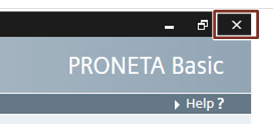

PRONETA Professional 是由西门子发行的商业许可软件产品。其中包含 PRONETA Basic 的功能，此外还提供有其它功能.
获取 PRONETA Basic
PRONETA Basic 可从西门子支持门户网站免费下载：
https://support.industry.siemens.com/cs/ww/en/view/67460624
本手册指的是版本 V3.0。
系统要求
通过工业以太网电缆建立与 PROFINET 的连接。
还需要装有以下附加软件组件：
WinPcap 4.1.3 或更高版本
如果用户 PC 上未安装 .NET，则安装程序会引导用户转至下载位置。WinPcap 包含在 PRONETA Basic 发行版内，如果未找到，则将在 PRONETA Basic 首次启动时进行安装。
|
注意 |
|
支持的 SIMATIC 软件
PRONETA Basic 允许加载通过 STEP 7 版本 V5.4、V5.5 或 V5.6 创建的参考项目。也可以导入通过 TIA Portal 创建 AML（“自动化标记语言”）文件。
局限性
能够执行可靠网络扫描的最大网络规模为 500 台设备。对于较大网络，可能无法检测到设备，或者 PRONETA Basic 可能会崩溃。（另请参见 见在线模式)
在 IO 测试中，可能无法可靠观察到持续时间在 256 ms 以内的信号变化。（另请参见 IO 测试任务)
PRONETA Basic 支持所有符合 PROFINET 标准的设备，与这些设备的制造商无关。支持的功能范围取决于各设备。
IO 测试支持以下模块：
最新版本的 SIMATIC ET 200 模块
SIMATIC IO-Link 模块（主机/设备）
SIMATIC 紧凑型现场单元 (CFU)
SIRIUS 电机起动器（固件版本 V1.1 或更高版本）
SIPLUS 加热控制系统 HCS4200/4300
参考列表
有关 PRONETA Basic 支持模块的持续更新列表，请参见 PRONETA Basic 下载页
更新 PRONETA Basic GSDML 数据库
对于在版本 V2.6 之后发布的模块，如果不需要任何新功能，则随后可通过从西门子 工业在线门户 网页导入其 GSDML 文件而受支持。更多相关详细信息，请参见 GSDML 管理器 一章。
安装
将 PRONETA Basic 文件存档解压到 PC 上的文件夹中，并通过工业以太网电缆将 PC 连接到工厂。
无需进一步安装 PRONETA Basic。
|
注意 |
PRONETA Basic 的解压路径下不能包含特殊字符“#”或“;”。 要执行 IO 测试（参见 IO 测试任务, 3.3)，必须将 PRONETA 置于其在执行期间具有写权限的目录中。 |
启动 PRONETA Basic
安装完成后，只需双击解压文件夹中的程序图标即可启动 PRONETA Basic。
|
注意 |
首次运行 PRONETA Basic 时，系统会要求用户先确认许可条件，然后再继续进行下一步。 |
还可以在桌面上创建 PRONETA Basic 的快捷方式链接，之后可通过该链接启动程序。
关闭 PRONETA Basic
要退出 PRONETA Basic，请单击程序窗口的“关闭”(Close) 图标。

卸载
如果不会再使用 PRONETA Basic，请执行以下两个步骤：
1. 删除解压 PRONETA Basic 的目标文件夹，
2. 在 Windows 开始菜单中，执行“WinPcap -> 卸载 WinPcap 4.1.3”(WinPcap -> Uninstall WinPcap 4.1.3)